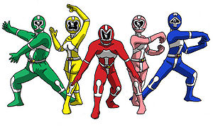
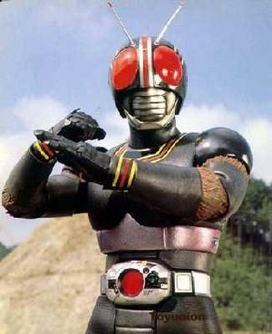
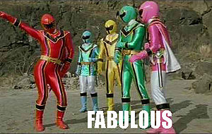

Super Sentai
 De: La Frikipedia, la enciclopedia extremadamente seria.
De: La Frikipedia, la enciclopedia extremadamente seria.
El super sentai (ojo, sentai; no hentai, ¡safado!) es un género bastante extendido en japón. Es uno de los tantos intentos de Japón para sodomizar los cerebros de los infantes, y en un futuro cercano, de dominar el mundo. Además, sirve como base para que los norteamericanos no necesiten pensar mucho al momento de crear a los Power Rangers, ya que los copian igualitos como se los ve en Super Sentai. Es más, toman escenas de este para acoplarlas a las series de los Power Rangers, lo cual nuevamente muestra el elevado nivel de pereza y ocio que existe en este continente de mierda. Este género genera ataques epilepticos emoción con sus lucecitas, explosiones de colores, trajes en colores chillones y fortalezas volantes. Este género trata de un grupo de buenos que pelea contra un grupo de malos, siempre lo mismo.
Descripción
 Si peleas asín, solo puedes matar al enemigo de risa
El super sentai siempre va a tratar de un grupo de héroes fumados que luchan contra una pandilla de alienígenas que viene a la tierra a conquistarla llevarse toda la droga del mundo. Estos superhéroes drogatas no dejarán que eso ocurra y gracias a poderes tecnológicos o mágicos que creen tener a causa de las drogas, obtienen unos trajes ridículos de colores y pelean con artes marciales enfarlopados contra los villanos roba-droga.
Estos semana)
En algunas ocasiones, los héroes drogatas, al no tener suficiente poder droga para flipar, tienen que recurrir a encontrar a los héroes drogatas que antes estaban en su lugar para que su colocón sea lo suficientemente grande como para superar la alucinación que estaban viviendo.
Características
 Algo así solo puede ser producto de las drogas
Los super sentai se caracterízan básicamente por:
- Grupo de tipos (5 es lo general) que pelean contra tipos que vienen de otro planeta
- Tienen trajes ridículos
- Hacen coreografías estúpidas al aparecer o irse
- Tienen robots gigantes que se juntan en uno
- Los malos siempre pierden por A o por B
- Los malos siempre tienen un ejército de esbirros enormes que los buenos se cargan de una leshe
- Siempre hay explosiones de colorines
- Solo se manda un monstruo por episodio
- El daño provocado siempre se exagera
- Las ciudades nunca se destruyen aunque la lucha sea devastadora
Importancia
Si no existiera el Super Sentai, no tendríamos a los Power Rangers en nuestros televisores. Aunque cabe destacar que en el Super Sentai las personas trabajan con más empeño que en Power Rangers, ya que al menos crean películas, OVAS, y demás. En Power Rangers crean sólo unos putos 30 y tantos episodios, de los cuales el 90% son escenas robadas al Super Sentai, sólo cambiando las voces de los actores. Sirve para que mocosos infantiles practiquen sus conocimientos de artes marciales viendo los movimientos que hacen los personajes, además, para copiar los peinados que se hacen los actores japoneses, los cuales me recuerda mucho a los emos.
Diferencias entre Super Sentai y Power Rangers
- Super Sentai existe desde 1975, y Power Rangers desde 1993. Nótese el retraso de EE.UU. con respecto a Japón, en lo que a frikada se refiere.
- Los Power Rangers son espantosamente más infantiles que Super Sentai. Es normal por ejemplo ver sangre en el Super Sentai, o ver parejas besándose (no mierda, tirando no, bien que pensaste eso depravado). Esto se debe a que los niños japoneses aparentemente no son tan idiotas como los occidentales y no andan copiando lo que ven en la tele.
- En Power Rangers se preocupan más por efectos especiales, y por el uso de mucho 3D. Cosa que sirve para hacer que los niños alucinen y digan WOOOWWWW. En Japón no pasa eso, simplemente le meten un balazo y le cortan la cabeza al monstruo en medio de un ritual satánico, junto a sus bailes extraños.
- Las primeras generaciones de Super Sentai tenían la característica de causar pesadillas a los niños pequeños debido a sus trajes muy extraños y algo diabólicas. En Power Rangers no sucede eso.
- Lo único que aportó Power Rangers en el Super Sentai fue la existencia de las armaduras para los que visten de rojo. Los norteamericanos tuvieron que exprimir sus sesos para crearlas, y los japoneses quedaron sorprendidos del desarrollo de estos seres, así que las copiaron.
Algún super sentai
 El magired mostrando lo macho que es
- Kyoryu Sentai Zyuranger: serie en la que se basaron para hacer la primera temporada de los power rangers en donde se mezclan a magos, dinosuarios y robots (si, según esto todo eso alguna vez existió al mismo tiempo). Una vieja más fea que tu tía es despertada en el planeta Namek por lo que Juan Pablo II (que en ese entonces estaba vivo) despertó a cinco frikis que estaban durmiendo por miles de años (y los güeyes ni siquieran pasan de los 20 años). He aqui de los que ya se les había hablado, al ranger amarillo lo convierten en mujer en la versión gringa, esto hizo enojar a Dios y por eso la ranger amarilla se murió (y esto no es broma frikipedica)
- Gogo Sentai Dairanger: serie en la que se basaron para hacer la segunda temporada de los power rangers pero según los putos gringos esto también forma parte de los zyurangers. Extraña combinación entre Dragon Ball, Street Fighter y Mazinger Z.
- Ninja Sentai Kakuranger: serie en la que se basaron para hacer la tercera temporada de los power rangers pero como era tan japonesa como su antecesora, decidieron que fuera también parte de los zyurangers. Basada en las tortugas ninjas, Sasuke (nada que ver con el Uchiha )libera a monstruos y por eso una chavala de blanco lo obliga a el y a su amigo gilipollas a agarrar unas
pollas espadas y mágicamente los conviertieron en ninjas. Algo que la diferencia de los otros sentais es que este fue el primero (y el único) en que el líder no es rojo y además de que es una mujer, aunque como siguen siendo unos machistas el rojo sigue siendo el prota.
- Choriki Sentai Ohranger: serie en la que se basaron para hacer los power rangers zeo debido a que ala gente ya la tenia hasta los cojones de tanto mighthin morphin
- Gekiso Sentai Carranger: serie en la que se basaron para hacer los power rangers turbo pero al parecer no se fijaron que ya existía un turboranger los muy pendejos. Unos tipos entran a trabajar a una fábrica de autios y reciben por parte de los autobots sus poderes de carro. No es más que un pretexto para recordarnos que los japos tienen los mejores carros del mundo.
- Denji Sentai Megaranger: serie en la que se basaron para hacer power rangers en el espacio, basada en High School Musical (pero a la japonesa) y en School Rumble, 5 chavales de preparatoria se han metido en un videojuego y luchan en el contra Freezer y demás frikis extraterrestres pero casi toda la puta serie se basa en los protagonistas y sus problemas juveniles.
- Seiju Sentai Gingaman: (vaya por fin algo que no termina con ranger): serie en la que se basaron para hacer power ranger en la galaxia perdida, la cual convirtieron en un star trek. Pero bueno volviendo a la versión original, es una extraña mezcla entre caballeros del zodiaco y capitán harlock. Otra civilización inventada de hace tres milo años fue invadida por piratas espacilaes y unos guerreros legendarios (si, otros guerreros legendarios) los encerro en la gran línea. Y como es de imaginarse, estos vuelven y ahi van más los frikis a salvar el día.
- Kyukyu Sentai GoGoV: serie en la que se basaron para hacer power rangers a la velocidad de la luz (aunque era mentira ya que eran más lentos que una babosa). Una organización secreta recluta a unos chavales para enfrentarse a unos demonios haciendose pasar por unos rescatistas. Lo raro es que los animales de los gringos se les ocurrió meter a un ranger de titanio del culo.
- Mirai Sentai Timeranger: serie en la que se basaron para hacer los power ranger fuerza del tiempo, y trata sobre los viajes en el tiempo (aunque solo viajan hacia una puta epoca la cual es esta. Algo curioso es que también tiene un poco de Digimon ya que aparece un rojo capaz de invocar a un digimon con el digivice que tiene en la muñeca.
- Hyakujuu Sentai Gaoranger: serie que se basaron para hacer los power rangers fuerza salvaje, los gaoranger esta basado en el anime tokio mew mew, ya que unos chamacos con poderes de animales, quieren enviar un mensaje ecologico, cklar que al igual que a tokio mew mew (la cual los gringos le quitaron todo lo ecologico) a esta tambien le quitaron todos los mensajes del ambiente y la utilizaron para promover la contaminación (estos putos gringos)
- Ninpuu Sentai Hurricanger: serie en la que se basaron para hacer los power rangers tormenta ninja, este sentai esta basado en Naruto. Jiraiya se ha convertido en el director de una academia ninja (llamada icha icha school) pero de pronto unos extraterrestres lo convirtieron en Hamtaro. Asi que para que el viejo regrese ala normalidad su hija Shizune (si resulta que Shizune es su hija, solo que aqui la llaman de otra forma), le entrega todo tipo de armas a tres narutards para que vayan por ahi usando pokemones para combatir a los extraterrestres.
- Bakuryuu Sentai Abaranger: serie en la que se basaron para hacer los power rangers dinotrueno, solo que como la vieron muy poco infantil le cambiaron automaticamente todo a la puta trama. Aqui se ve lo indecisos que son los japoneses, según esta serie todo lo de zyuranger era mentira y nunca paso. Aqui los dinosaurios hablan, y tienen que enfrentrarse a unos seres más feos que una monitor por dentro, la niña del aro y aun profesor emo.
- Tokuso Sentai Dekaranger: serie en la que se basaron para hacer los power ranger SPD, es algo así como la película ¨loca academia de policias¨, Weregarurumon es jefe de una policia especial y tiene que enfrentarse a una Al quaeda extraterrestre dirigidas por un Osama Bin Laden cosplayeado de Batman. Con el fanservice tenía el exito asegurado pero como los putos gringos era muy santurrones quitaron eso (a pesar de que ellos pasan cosas peores), venga hasat quitaron el uniforme femenino solo por que las chicas usaban minifaldas. Esta serie sirvio para crear digimon savers.
- Maho Sentai Magiranger: serie en la que se basaron para hacer power rangers fuerza mística, en esta serie donde el incesto abunda se baso en Harry Potter y Maho Sensei Negima.Homenajes a Changoman y Dairanger. Tercer grupo de hermanos, esta vez al más chico le dieron el rojo y el liderazgo
para que no se quejara mientras el mayor fue relegado al verde. Muchas varitas, hechizos, caballos, caballeros y otras piezas de ajedrez, entre los que se cuenta Darth Wolzard, el padre de los héroes, al que se le ablandó el corazón con el tiempo. Rita aparece cerca del final, por una vez buena. Termina con la azul casada con su profesor, los padres reunidos con sus hijos y un equipo de ocho rangers de todos los colores imaginables.
- Go Go Sentai Boukenger: serie en la que se basaron para hacer power ranger operación sobrecarga. Se trata de cazadores de tesoros como de Indiana Jones.En el mérito personal, éstos derrotaron a Ratzinger Z el Megazord de los Power Rangers, Orochimaru y El duende verde al mismo tiempo, tuvieron muchos robots, no tenían plan dental, y el plateado tenía un traje reflectante que permitía al resto verse como en un espejo. Tampoco se debe olvidar al Zupan, un digimon con forma de Excalibur dorada, que terminó su vida útil como destapador de botellas.
- Rival Schools. Un chico con ropa de Tarzán y mentalidad de Son Goku aprende el taijutsu del clan Hyuuga el juuken. Lo srprendente es que con su cerebro de cacahuate el chaval aprende de inmediato las tecnicas por parte de un maestro cruza, de Meowth, el gato blanco gigante de Ranma y el maestro Roshi.
- Engine Sentai Go-onger: serie en la que se basaron para hacer Power Ranger RPM, algo extraña en esta serie es igual a Carranger pero aqui los carros parecen pokemones ya que estan vivos. Aunque más bien se trata de un homenaje a Transformers donde Autobots y Decepticons se dan de madres entre si.
- Samurai Sentai Shinkenger: serie en la que se basaron para hacer Power Ranger Samurai, y Power Ranger Super Samurai, Rurouni Kenshin|Kenshin Himura]] se pondra el traje del rojo, con un casco que tiene un monigote kanji que no lo dejará ver para donde va. Creo que piensan vender katanas con mp3 para los medicamentos contra el mareo de los creativos despues de tanto pensar. Es asquerosamente japonesa, porque son samurais y porque se transforman con el kanji de su elemento respectivo.
- Tensou Sentai Goseiger: serie en la que se basaron para hacer Power Ranger Megaforce (les importa un carajo que los Power Rangers en el Espacio eran originalmente MegaRanger),trata sobre ángeles. Su líder Alata es el más puto de toda la historia del Super Sentai. Cuando se transforma, aparenta ser hombre para que los monstruos no lo destruyan.
- Kaizoku Sentai Gokaiger: serie en la que se basaron para hacer Power Ranger Super Megaforce (les importa un carajo el nombre), trata sobre piratas espaciales. Estos tienen la particularidad de poseer los poderes de TODOS los sentai anteriores. Agarran las llavecitas que contienen
el semen los poderes de cada Ranger y lo introducen en su culo en su Mobirates (así se llama el aparatejo con el que se transforman). Una voz sale de la máquina esta y anuncia en qué mierdas se han convertido los payasos de turno. Ejemplo:
MAAAAAAAAAAAAAAAAAAAAAAAAAAAAAAAAAAAAAAAAAAAAAAAAAAAAAAAAAAAAAAAAAAAAAAAAAAAAAAAAAAAAAAAAAAAAAGIRANGER!!!
(esta es la versión abreviada, con fines ilustrativos únicamente)
- Tokumei Sentai Go-Busters: Actualmente, esta es la serie en la que van en Japón ahorita. Han mandado a todos los 35 años anteriores de Super Sentai a la chingada, y empezado con nuevos trajes, robots, ayudantes y toda la parafernalia respectiva. Lo irónico de esta serie es que usa la frase de transformación de los Mighty Morphin' Power Rangers ("It's morphin' time!"), claro que como son tan japoneses le ponen su toque de Engrish y añaden "Let's Morphin'!".
Sabías que...
- ... los Super Sentai pueden elevar su ki?
- ... las chicas de Super Sentai son más bonitas que las de Power Rangers?
- ... las chicas de Power Rangers tienen mejores cuerpos que las de Super Sentai?
- ... siempre existe un friki en cada generación de Super Sentai?
- ... todas las películas de Super Sentai están en Youtube?
- ... el 97% de los que ven Super Sentai se vuelven otakus?
- ... el otro 3% aprende a pelear?
- ... pierdes tu tiempo leyendo esto?
- ... el mamón que creó este tema es un tipo que comete horrores ortográficos?
- ... yo soy un genio porque reparé este tema?
- ... la imagen de más arribita en la que se ve un tipo vestido de mosca y que debajo dice "esto es producto de las drogas" o algo así, no es un Super Sentai sino un Tokusatsu?
- ... los Tokusatsu de los que hablaba sirvieron de base para crear a Masked Rider?
- ... Masked Rider era una mierda sin éxito y por eso no crearon más?
- ... Cualquiera se puede transformar en Ranger con las benditas llaves de los Gokaiger?
- ... Solo un 0.00000000000000000000000000000000000001% de la población mundial sabe que existe el Super Sentai? Y todos son frikis?
- ... acabas de convertirte en friki porque ya sabes qué es?
- ... las baka rangers acaban con sus enemigos a patadas,pero luego se quedan en bolas y el final siempre se censura?
- ... este artículo está bajo la categoría de Anime, pero no tiene nada que ver con el tema?
Autor(es):
- Frikiman
- PaladinImperial
- Naruto hyuga
- Lljosemll
- Catacras
- Mel-o
- Killeroh
- Piruru-angolcrazy
- Pmpg
- Sebas920118ruiz
Frikipedia 2005-2016, Licencia
GFDL 1.2 - Extraído por FrikiLeaks